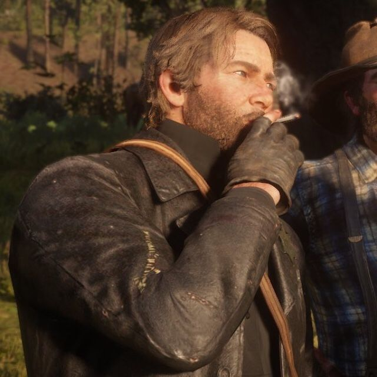
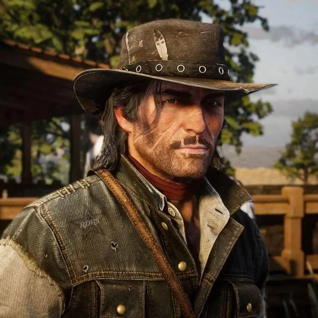

Card dos Personagens

Arthur Morgan
Um membro da gangue Van der Linde, Arthur deve lidar com o declínio do Velho Oeste enquanto tenta sobreviver contra as forças do governo

John Marston
John Marston é o protagonista do jogo de 2010 Red Dead Redemption, onde a ação se passa em 1911 durante o declínio do Velho Oeste em que Marston é forçado a localizar e a matar os últimos membros do seu ex-grupo em troca da sua família.